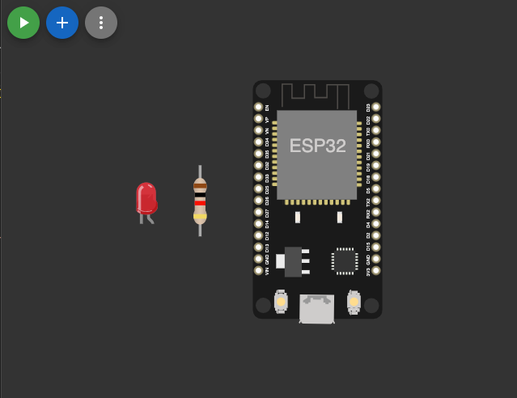
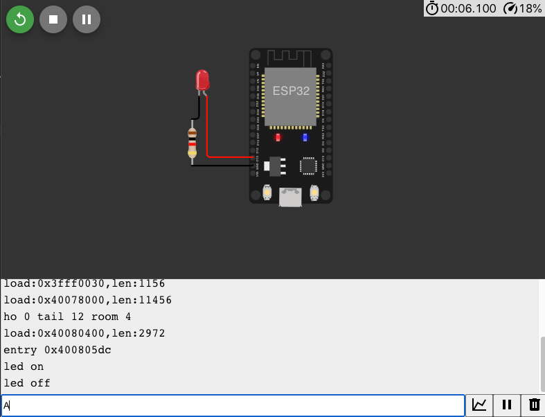

Pertemuan ke 6: Jenis Komunikasi Data
Topik Bahasan
Proyek Dasar Mikrokontroller (Jenis Electronics Development Board dan Bahasa Pemrograman Microcontroller, Pengenalan & Jenis Komunikasi Data, Pengenalan Teknologi Smart card, Praktik Dasar Elektronika)
Deskripsi
- Memahami berbagai jenis Electronics Development Board seperti: Arduino Uno/Nano, ATMega Series, STM32, ESP8266, ESP32, Raspi Pi Pico, Raspberry Pi, dan Jetson Nano
- Memahami jenis komunikasi data, baik data wired maupun wireless seperti: Komunikasi Serial, I2C, SPI, WiFi, Bluetooth / BLE, LoRa, ZigBee, Seluler (2G - 5G), NFC, dan NB-IoT.
- Memahami konsep dan teknologi smart card seperti Mifare, Desfire, Javacard dan protokol komunikasi smart car(APDU).
- Mampu menggunakan solder/desolder dengan benar, mampu mensimulasikan dan merancang rangkaian listrik (fritzing/wokwi), Mampu menerapkan dasar pemrograman Arduino.
Praktikum
Tentu, berikut adalah langkah-langkah untuk membuat proyek di Wokwi yang menghidupkan LED menggunakan komunikasi serial pada board ESP32:
Langkah-langkah Menggunakan Wokwi
Masuk ke Wokwi:
- Buka Wokwi.
Buat Proyek Baru:
Klik "New Project" dan pilih "ESP32".

Tambah Komponen:
- Klik "Add Part" dan cari "LED".
- Tambahkan LED ke canvas.
- Klik "Add Part" dan cari "Resistor".
Tambahkan resistor ke canvas.

Wiring:
- Sambungkan kaki positif LED (anoda) ke salah satu kaki resistor.
- Sambungkan kaki lain resistor ke pin GPIO 2 pada ESP32.
Sambungkan kaki negatif LED (katoda) ke GND pada ESP32.

Upload Kode untuk ESP32:
- Klik pada ikon "Code" untuk menambahkan kode ke ESP32.
Masukkan kode berikut untuk ESP32:
void setup() { pinMode(13, OUTPUT); Serial.begin(9600); } void loop() { if (Serial.available()) { char c = Serial.read(); if (c == 'A') { digitalWrite(13, HIGH); Serial.println("led on"); } else if (c == 'B') { digitalWrite(13, LOW); Serial.println("led off"); } } }
Run Simulation:
Klik "Start Simulation" untuk menjalankan simulasi.

Masukkan huruf
A atau Buntuk menghidupkan/mematikan LED melalui serial monitor.
Tugas Mandiri
Dengan menggunakan wokwi silakan mensimulasikan penggunaan aktuator dan aktuator sekaligus menggunakan komunikasi serial. Silakan dokumentasikan hasil simulasi dengan screen recording.